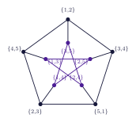
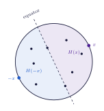
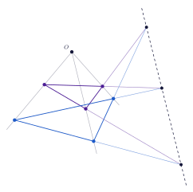
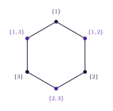

In 1955, Martin Kneser published a small exercise in the problems section of the journal of the German Mathematical Society. The small exercise turned out to be much more difficult than Kneser expected and remained unsolved for twenty-three years after it was published. Because of this, I am not sure whether we should call it a good exercise or a bad one, but I will say good because I like it.
The exercise
The problem was the following. Suppose I give you a shelf of $n$ books, and consider all of the ways to choose $k$ of them (where $n \geq 2k$). If you are tasked with sorting these $k$-element subsets into groups, so that no group contains two disjoint subsets, that is, so that any two subsets in the same group share a book, what is the least number of groups you need?
Kneser proposed a sorting, which he believed used the least number of groups possible: $n-2k+2$ of them. It goes as follows. Number the books $1$ through $n$. For each $i$ from $1$ to $n-2k+1$, make a group out of every subset whose lowest-numbered book is book $i$. Any two subsets in group $i$ both contain book $i$, so no two of them are disjoint. Now, which subsets are left over? Exactly the ones whose lowest-numbered book is $n-2k+2$ or higher, meaning they are chosen entirely from the last $2k-1$ books. Two disjoint subsets of size $k$ would need $2k$ different books between them, and only $2k-1$ are available, so no two of the leftovers are disjoint either, and they can all be placed into one final group together. That gives $n-2k+1$ groups, plus one for the leftovers, so $n-2k+2$ in total.
Despite having this sorting strategy, Kneser was not able to rule out or prove that no smarter sorting uses fewer groups. Despite the seeming simplicity of the problem, neither he nor anyone else was able to solve it for another twenty-three years.1
The graph
To attempt solving the problem, one could naturally think of creating the following graph. Make one vertex for every $k$-element subset, and put an edge between two subsets exactly when they are disjoint. We call this graph the Kneser graph $K(n,k)$. The edges record exactly the pairs that a sorting must keep apart, so a valid group is a set of vertices with no edges among them, and a sorting of every subset into $t$ valid groups is a proper coloring of $K(n,k)$ with $t$ colors. The least number of groups is therefore the chromatic number, and Kneser's conjecture becomes $\chi(K(n,k)) = n-2k+2$.
It helps to look at a few examples. When $k=1$, any two distinct subsets are disjoint, so $K(n,1)$ is the complete graph $K_n$, which indeed needs $n-2+2 = n$ colors. When $n=2k$, each subset is disjoint from exactly one other, namely its complement, so $K(2k,k)$ is a perfect matching, meaning a graph whose edges pair all the vertices off two by two. And $K(5,2)$, drawn in Figure 1(a), is the Petersen graph, which is also the standard counterexample to nearly everything. The Petersen graph needs exactly $3 = 5-4+2$ colors, so the conjecture holds there as well.

Twenty-three years, then topology
The conjecture was finally proven in 1978 by László Lovász (Lovász, 1978). Lovász used the Borsuk–Ulam theorem: every continuous map from the sphere $S^d$ to $\mathbb{R}^d$ must send some pair of antipodal points to the same value. Bárány found a much shorter topological proof the same year, and in 2002 Joshua Greene found an even shorter one, so short that I include a sketch of it here.
Suppose that the $k$-subsets have been sorted into $m = n-2k+1$ groups, one fewer than Kneser's sorting uses. Place the numbers $1,\dots,n$ on the sphere $S^m$ as points in general position, meaning no hyperplane through the center touches more than $m$ of them. Every point $x$ on the sphere has an open hemisphere $H(x)$ centered at it. For each group $i$, let $U_i$ be the set of points $x$ where $H(x)$ contains some full subset from group $i$. Each $U_i$ is open. Let $F$ be the set of remaining points, whose hemispheres contain at most $k-1$ of our points. $F$ is closed. Together, these $m+1$ sets cover the whole sphere.

Now, a theorem similar to Borsuk–Ulam says that if $S^m$ is covered by $m+1$ sets, each of them open or closed, then one of the sets contains two antipodal points $x$ and $-x$. If that set is some $U_i$, then $H(x)$ and $H(-x)$ each contain a subset from group $i$. Opposite hemispheres are disjoint, so group $i$ contains two disjoint subsets, which is not allowed. If that set is $F$, then the two hemispheres contain at most $2k-2$ points in total, so at least $n-2k+2 = m+1$ points lie on the equator between them, and the equator spans a hyperplane through the center, because general position does not allow for $m+1$ points on such a hyperplane. We have seen that both cases are impossible, and no such sorting with $m$ groups exists. That is basically the whole proof.2
Intersecting families
Kneser graphs also show up when the question is flipped around. Inside one group, every two subsets overlap. In set theory, this is called an intersecting family. Instead of asking how many groups are required to contain every subset, one could ask how large a single group can be. In terms of graph theory, this is the independence number of $K(n,k)$. One way to build a big intersecting family is to pick an arbitrary element and to take every size $k$ subset containing it. This family of subsets is called a star and has $\binom{n-1}{k-1}$ elements. The Erdős–Ko–Rado theorem, from 1961, says that no intersecting family beats the star, and that when $n > 2k$, every intersecting family of maximum size is a star. This theorem was proven before the Kneser graph was even first conceptualized, but when one considers the Kneser graphs, it is clear that this theorem computes their independence number.
The bipartite Kneser graphs
The bipartite Kneser graph $H(n,k)$, again with $n > 2k$, has the $k$-element subsets of $\{1,\dots,n\}$ on one side and the $(n-k)$-element subsets on the other, with an edge between $A$ and $B$ whenever $A \subseteq B$. A subset $A$ is contained in $B$ exactly when $A$ is disjoint from the complement of $B$, and the complement of $B$ is itself a $k$-element subset. So, by taking complements on one of the sides, we can see that $H(n,k)$ is the bipartite double cover of $K(n,k)$. That is, the graph obtained by making two copies of every vertex of $K(n,k)$, and joining copies from opposite sides whenever the original vertices were adjacent.
$H(5,2)$ is drawn in Figure 1(b), and by the above, it is the bipartite double cover of the Petersen graph. It also had a name before anyone built it from subsets: the Desargues graph. Girard Desargues was a French geometer, and his classical theorem says that if two triangles are positioned so that the three lines drawn through their corresponding vertices all pass through one common point, then the three points where their corresponding sides cross all lie on one common line (Figure 3). Drawing everything in that theorem produces ten points and ten lines, with three points on every line and three lines through every point, and the graph recording which points lie on which lines is exactly $H(5,2)$. This is the second time that a configuration from projective geometry has shown up uninvited. I do not know what to tell you.

The middle levels
When $n = 2k+1$, the sides of $H(2k+1,k)$ are the $k$-subsets and $(k+1)$-subsets of a $(2k+1)$-element set. These are the two middle layers of the cube of all subsets, so $H(2k+1,k)$ is called the middle levels graph. When $k=1$ it is a hexagon (Figure 4), and when $k=2$ it is the Desargues graph from Figure 1(b).

A famous conjecture about the middle levels graph was whether or not it always has a Hamiltonian cycle. If such a cycle existed, then walking along it would list every one of these subsets exactly once. Each subsequent step of the walk would only change from the previous subset by adding or removing a single element. In computer science, such a list is called a Gray code, which turns out to be useful for many programming applications.
In 1991, Simpson conjectured that every bipartite Kneser graph has a Hamiltonian cycle, and Mütze and Su proved it shortly after (Mütze and Su, 2017). The Kneser graphs themselves were proven to have a Hamiltonian cycle in 2023, with exactly one exception (Merino, Mütze, and Namrata, 2023): the one exception, of course, is the Petersen graph.
Why I bring them up
I have a favorite question about the bipartite ones myself. It is about surfaces rather than cycles, and it deserves its own post.